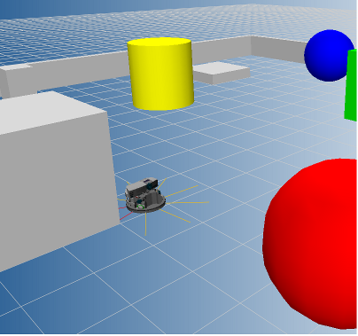
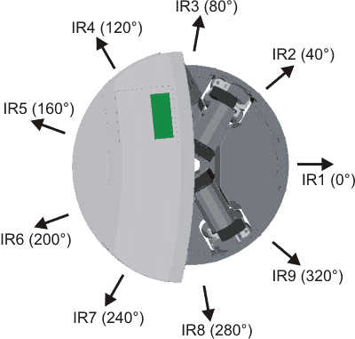

DistanceSensor Example
This example illustrates the use of the Distance Sensors on Robotino. If Robotino is placed in an obstacle cluttered environment then it moves around avoiding the obstacles. The example runs for 60 seconds.
Contents

Description
Robotino is equipped with 9 infrared distance sensors (labelled 0 - 8 ). In this example we read the voltage readings from the 0th (IR1), 1st (IR2) and 8th (IR9) sensor as they are in front of the robot.

Based on the readings from the distance sensors, we can find out if Robotino is approaching an obstacle or not. In case it is, we stop Robotino and let it rotate until all the three distance sensors do not detect any obstacles in front of them. If the sensors don't detect any obstacles in front of them then we let Robotino move forward with a constant velocity.
Code explanation
First we will need to construct objects that we will be requiring in our program. In this program, we will require objects of Com, OmniDrive, DistanceSensor, and Bumper. In case of DistanceSensor we will also need to specify the sensor number. This is done as follows.
ComId = Com_construct; OmniDriveId = OmniDrive_construct; DistanceSensor0Id = DistanceSensor_construct(0); DistanceSensor1Id = DistanceSensor_construct(1); DistanceSensor8Id = DistanceSensor_construct(8); BumperId = Bumper_construct;
Upon successful contruction of the objects, an Id is returned for each object. This Id is used later when communicating with Robotino. Now we need to set the address of Robotino and then connect to it. This is done as follows.
Note the IP address and port number might be different
Com_setAddress(ComId, '127.0.0.1:8081');
Com_connect(ComId);
Once we are connected to Robotino, we need to bind each of the object we created to Robotino using the ComId. This can be done as follows.
OmniDrive_setComId(OmniDriveId, ComId); DistanceSensor_setComId(DistanceSensor0Id, ComId); DistanceSensor_setComId(DistanceSensor1Id, ComId); DistanceSensor_setComId(DistanceSensor8Id, ComId); Bumper_setComId(BumperId, ComId);
We then start our "stop watch" to limit the example execution to 60 seconds.
tStart = tic;
We initiate a while loop based on the condition that Robotino's bumper hasn't detected a collision. Here we obtain the distance sensor readings and based on a simple comparison decide whether if we are approaching an obstacle or not. In case Robotino is approaching one, using the OmniDrive_setVelocity function we stop the robot and make it rotate. In case there is no obstacle in front of Robotino then using the same OmniDrive_setVelocity function, we let Robotino continue moving forward.
while (Bumper_value(BumperId) ~= 1) tElapsed = toc(tStart); % If 60 seconds are elapsed then exit while loop if(tElapsed >= 60 ) break; end; value0 = DistanceSensor_voltage(DistanceSensor0Id); value1 = DistanceSensor_voltage(DistanceSensor1Id); value8 = DistanceSensor_voltage(DistanceSensor8Id); if((0.7 <= value0)|(0.7 <=value1)|(0.7 <= value8)) % Approaching obstacle OmniDrive_setVelocity(OmniDriveId, 0, 0 ,100); else % No obstacle ahead OmniDrive_setVelocity(OmniDriveId, 500, 0 ,0); end; end;
Once 60 seconds have been elapsed and the while loop is exited. We will need to disconnect from Robotino as follows.
Com_disconnect(ComId);
It is also recommended to destroy all objects that we created for our example. This can be done as follows.
DistanceSensor_destroy(DistanceSensor0Id); DistanceSensor_destroy(DistanceSensor1Id); DistanceSensor_destroy(DistanceSensor8Id); Bumper_destroy(BumperId); OmniDrive_destroy(OmniDriveId); Com_destroy(ComId);
Video
A video of this example running can be viewed on youtube .